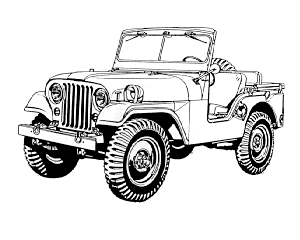
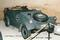
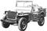
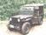
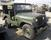

The M38A1 was the replacement for the M38. Unlike other military vehicles where the A1 suffix would denote a minor revision (e.g. M151, M151A1, M151A2), the M38A1 is a very different vehicle from the M38. It has a different frame, body, engine, and axles.
This utility truck is a four-wheel vehicle with both a front and rear driving axle. Designed for use as a general purpose personnel or cargo carrier, the vehicle is readily adaptable for reconnaissance, communications or other special duties. It is capable of operating with the engine completely submerged in water.
Department of National Defense Repair Manual 7610-21-848-1570
The M38A1 was the first jeep to drop the flat fenders for a more rounded, aerodynamic look. Because of this, it is easily distinguishable from the earlier jeep models.
| Model | Years | Length | Wheel- base | Width | Track | Height Min/Max | Ground Clearance | Weight | Payload | Approach/ Departure | Tires | |
|---|---|---|---|---|---|---|---|---|---|---|---|---|
 | Kubelwagen | 1939-1945 | 147 | 94 | 63 | 53 | 44 / 65 | 11 | 1,600 | 1,000 | 30° / 31° | 5.25x16 |
 | MB/GPW | 1941-1945 | 131 | 80 | 62 | 49 | 52 / 72 | 9 | 2,400 | 800 | 45° / 35° | 6.00x16 |
 | M38 | 1950-1953 | 133 | 80 | 62 | 57 | 55 / 74 | 9 | 2,600 | 1,200 | 55° / 35° | 7.00x16 |
 | M38A1 | 1952-1971 | 139 | 81 | 61 | 57 | 57 / 74 | 8 | 2,700 | 1,200 | 46° / 34° | 7.00x16 |
| M151A2 | 1960-1983 | 133 | 85 | 64 | 60 | 53 / 71 | 10 | 2,400 | 1,200 | 66° / 37° | 7.00x16 | |
| Iltis | 1976-1986 | 156 | 79 | 60 | 48 / 49 | 72 | 10 | 3,200 | 1,200 | 41° / 33° | 6.50x16 | |
All sizes are to the nearest inch.
All weights are to the nearest 100 pounds.
The m38a1 used the F-head "Hurricane" engine rather than the earlier L-head "Go Devil". Like the L-head, it is an in-line four cylinder engine of 134.2 cu. in. (2.2L) displacement.
The Model F4-134 engine is an F-head, four cylinder engine of combination valve-in-head and valve-in-block construction. Large intake valves mounted in the head allow rapid, unobstructed flow of fuel and air to the combustion chambers through short, water-jacketed intake passages. The intake valves are operated by push rods through rocker arms. The exhaust valves are mounted in the block with through water jacketing to provide effective cooling. The exhaust values are operated by conventional valve tappets.
Department of National Defense Repair Manual 7610-21-848-1570
Moving the intake values into the head allowed them to be larger by almost 25%. This gives more torque for the same displacement. Due to the overhead values, the F-head is taller than the L-head but otherwise roughly the same size and shape.
| L-HEAD | F-HEAD | |
|---|---|---|
| Displacement | 134.2 cu.in. | 134.2 cu.in. |
| Horsepower (SAE) | 15.63 | 15.63 |
| Brake HP @ 4,000rpm | 60 | 68 |
| Torque @ 2,000rpm | 105 lbs-ft | 113 lbs-ft |
| Bore | 3 1/8" | 3 1/8" |
| Stroke | 4 3/8" | 4 3/8" |
| Intake Valves | 1 17/32" | 2" |
| Exhaust Values | 1 15/32" | 1 15/32" |
| Compression | 6.48:1 | 6.9:1 |
| Carburetor | Carter WO-539S | Carter YS950S |
Complete specifications for the F-Head
You can easily tell the Canadian F-heads from the American because the Canadian F-heads have three fan belts and the American have two.
The engines where waterproofed.
It is capable of operating with the engine completely submerged in water. Underwater operation is possible because of waterproofed components and a design which utilizes the engine ventilating system as a pressure seal against entry of water past mating surfaces. Since a majority of the waterproofed assemblies require atmospheric pressure, either to operate or prevent condensation damage, a ventilating tube system is used for this purpose.
Department of National Defense Repair Manual 7610-21-848-1570
For extreme cases, a snorkel can be attached to the air cleaner. The snorkel comes out through a cutout in the hood on the passengers side. The engine can be started under water if positive pressure has not been lost. This means if you stalled you could start it again, but don't park it in a lake!
The front axle is a Spicer (now Dana) 25 full-floating axle while the back is a Spicer 44 semi-floating axle. The 2x series are full-floating axles. The 4x series are semi-floating.
In a full-floating axle, the axle bearing is placed on the outside of the axle housing. This places all the vehicle weight on the axle housing and none on the axle itself. This is important for the front axle which is generally a short shaft.
In the semi-floating axle, the axle bearing is placed in the axle housing and the axle carries some of the load of the vehicle. The main advantage of the semi-floating is that it is simpler (i.e. cheaper).
Emergency
Where difficulty is experienced with front axle differential making the vehicle inoperative, remove axle driving flanges. This will allow bringing vehicle in under its own power. Be sure front wheel drive shift lever is in the forward (disengaged) position.Department of National Defense Repair Manual 7610-21-848-1570
The m38a1 has a Warner T90 transmission. It is a three speed manual transmission with "synchronous mesh in 2nd and 3rd". Hmmm, they seem to have left out 1st! Synchronous mesh (or synchromesh) makes it easier to shift gears without grinding. It can be hard to shift into first when at a complete stop or moving faster than a crawl.
A great description about how manual transmissions work with a description of syncronizers (synchromesh).
Comparison of the T90 and the T84 used in the MB/GPW.
| Reverse | First | Second | Third | |
|---|---|---|---|---|
| T84 | 3.554:1 | 2.665:1 | 1.564:1 | 1.000:1 |
| T90 | 3.798:1 | 2.798:1 | 1.551:1 | 1.000:1 |
In high range, high gear, both the transfer case and the transmission are direct (1.0:1). With a rear ratio of 5.38:1, this gives a top speed of 60 MPH. I found this is overly optimistic. I found 50 MPH was pushing it. You might get 60 MPH on a steep hill with the wind behind you.
The m38a1 uses a Spicer Model 18 transfer case. This transfer case is basically a two-speed transmission which is located after the standard transmission. It provides a means of transferring the power to the front axle. It can also provide a PTO for a variety of uses, commonly for a Ramsey winch.
The three generations of the Spicer 18 transfer case are shown in the table below. High range is always direct (1.00:1).
If you are in doubt as to which transfer case you have, you can measure the intermediate shaft without disassembly, as the forward and aft ends are visible from the outside. The aft end will be slightly larger than the front by a few thousandths of an inch, but you will easily be able to tell the difference between the three.
Paul Weitlauf
| SPICER MODEL 18 TRANSFER CASE | ||||||
|---|---|---|---|---|---|---|
| Truck | Intermediate Shaft Dia. | Mainshaft Gear | Intermediate Gear | Output Gear |
Sliding | Low Ratio |
| MB | 3/4" | 27 | 23 - 33 | 27 | 37 | 1.97:1 |
| M38 | 1 1/8" | 26 | 21 - 34 | 26 | 39 | 2.43:1 |
| M38A1 | 1 1/4" | 29 | 18 - 39 | 29 | 33 | 2.46:1 |
Note: The M606 used the same transfer case as the M38A1.
The most asked question while stopped at a street light: "What are all the gear shifts for?" There are a total of three "gear shifts", one for the transmission and two for the transfer case. Going from left to right, the first is the gear shift proper (i.e. reverse-1-2-3). The next engages or disengages the front wheel drive. The last selects low, neutral or high. You can only select the low range in 4WD. And yes, it has shift on the fly.
If equipped with the PTO winch, there would be a fourth lever to engage and disengage the winch.
| M38A1 CDN | M38A1 CDN2 | M38A1 CDN3 |
|---|---|---|
| 1952-1953 | 1953-1969 | 1970-1971 |
|
|
|
I was proud owner of a 1967 M38A1 CDN2 built by Kaiser of Windsor. The truck was overhauled by the Military in 1984 and upgraded to a CDN3. The upgrade gave me a leaky windshield washer, solid state flashers (high tech, eh), and a new wiring harness.
The truck averages 15 mpg combined city/highway, less offroad.
How does it drive? It is slow. 45 mph (70 kph) is a realistic highway speed. It also has a very harsh ride due to the thickness and number of springs. However, it shifts very smoothly, you just have to get used to downshifting into first without the synchromesh. I also find the steering very easy. I believe the horror stories you hear are due to mechanical problems with the truck. I have no problem parallel parking the truck in the city.
The brakes are good but not great. I find you must downshift if you want to stop fast. You cannot drive as fast or corner as hard as a car. When driving the truck, the speed warnings in corners are actually meaningful!
You also get wet when it rains, even with the top up. I try to remember to bring a rain suit with me always... Also gloves for the cool spring/fall evenings.
However, once you get used to its limitations, it is very relaxing and fun to drive. Last summer, the Mazda sat in the parking lot and I used the truck for my daily commute to work, for groceries, and for fun!I put over 4,000 miles on the truck in the first 6 months.
Now the bad news. The truck currently has a broken crank shaft. Broke in two places, just after the first counter weight and just before the second. I actually drove it to work and back like this, thinking it was the wheel bearing.... Plus the transfer case leaks like a sieve. Other than that, all it really needs is some detailing and a coat of paint.
Well, ten or more years later, I still had not fixed the jeep. And it was slowly rotting in the back yard. So I sold it and gave it a better home.
The following is Gerry Davidson's reply to a request for information on the M37. It also aplies to the M38A1.
Subject: Re: Info wanted on Dodge M37 3/4 ton trucks
Well, there are probably a thousand good reasons why you shouldn't buy and run an M37 (or a WC51 or WC52 for that matter) if you want an economic street machine. The question you have to ask yourself is what you want to use it for...I run a WC51. I don't care at all that it only gives 3.5-4.0 Km/ltr (same as the M37). I don't care at all that I can only run it at max 40mph if I don't want engine trouble (the block is from March '49). I don't even care that I have to wear thermal underwear in the winter (-200C to -400C). Why do I run it on a daily basis? I love the way people turn their heads when they hear the rumble of the engine and the whine of the gearbox when I'm climbing a hill. I love the fact that when everyone else is lying in the ditch on snow-covered roads, I can drive by (and earn enough for the petrol by pulling them out again). I love the fact that when I park next to a Rolls Royce, it's Betty Boop (my WC51) the pedestrians look at and not the Rolls.... That's why. If that's not up your particular street, don't buy an M37 - you'll only get lots of heartaches...
Regards
Gerry Davison - Denmark
M38A1 ¼ TON TRUCK IN CANADIAN SERVICE by Andrew Iarocci. Part of the Canada Weapons of War series. This is where I got the production figures and costs. But there is much more information. 24 pages with lots of pictures.
Thanks to Clive Reddin for information used in this page.
There is a lot of misinformation in the documentation about the Spicer 18 transfer case. Thanks to Todd Paisley and Paul Weitlauf for the information about the transfer case.